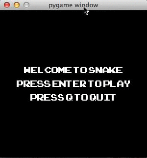

I was supposed to be writing a blog post about the cool air conditioner controller I just made for myself, but instead I wrote Snake, that game you used to play on your cell phone, in python using pygame. Then, I couldn’t stop playing it:

Things that were surprisingly easy:
Installing pygame
The first time I tried to install pygame about a year ago, I got hopelessly stuck and gave up. It turns out though, that you can use Homebrew (if you are a mac user and use homebrew)! I did that following the instructions on this reddit subthread, thanks to Allison, one of the facilitators at Hacker School.
Using pygame
The documentation can be a little hard to get into right off the bat, but going through the first tutorial Introduction to pygame gives you almost everything you need to know to make a simple game like snake.
- run
pygame.init() - make a screen:
screen = pygame.display.set_mode((width,height)) - make a Surface object:
my_surface = pygame.Surface((width,height))(There are some other options available here, but I didn’t need them.) - blit the surface to the screen
screen.blit(my_surface,position)positionis a tuple defining the top left corner of your surface within the coordinates of your screen. No idea why this operation is called ‘blit’, but what it’s doing is copying a set of pixels onto another set of pixels. For example, copying the set of pixels representing your image (a Surface) onto the set of pixels that is your screen (another Surface). pygame.display.flip()This updates the visible display. you can also usepython pygame.display.update(), but the tutorial recommends.flip().
You can access key presses by calling pygame.key.get_pressed().
I had to do a bit more googling to figure out how to display my ‘welcome’ and ‘you died’ messages, but that’s it for the pygame parts of the game, the rest is just python.
Things that were challenging
Movement
I was struggling to figure out how to get the body segments to follow the head around properly until Mary, one of the facilitators at Hacker School, suggested that I could just have the Head object move each body segment to the position of the segment in front of it.
Growing
Mary also pointed out to me that it would be problematic to have the Snake grow from the back after eating, because if the snake’s head was one square away from the end of it’s tail, for example, it could die by eating the food in front of it and growing, which is not an outcome we want to allow.
In order to avoid this, the snake grows by keeping the existing body segments in place for one update and just filling in another square between the head and the body.
Also, it is important to make sure new Food objects don’t randomly place themselves on occupied squares.
Other stuff to consider
Collisions
Because all my objects are the same size, all objects exist on a grid square within my screen, and all pygame Surface positions are defined by the upper left corner, determining whether there was a collision was just a matter of checking the positions of all pairs of objects in the game for equality. This would be a bit trickier if you had to check the full Surface for overlaps of any sort.
Waste time!!
Play the game or have a look at the code here. The only dependency is pygame 1.9.1. Right now the code is around 250 lines, but I’m sure it could be tighter. Let me know if you have suggestions or some code review!